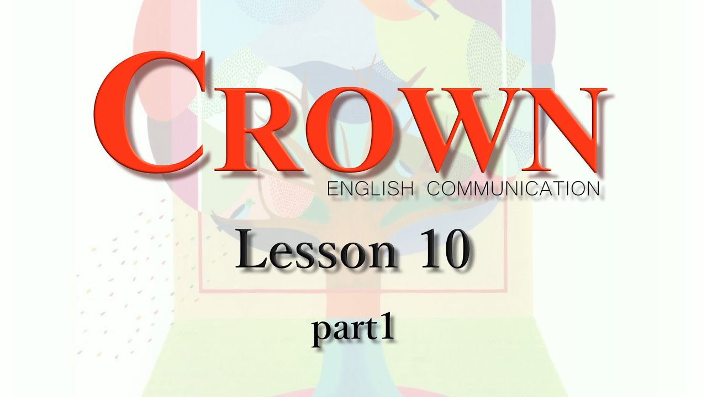

おすすめ
【ComⅡ】Lesson10-全パートAnother Point of View 本文和訳
【ComⅡ】Lesson10-全パートAnother Point of View 本文和訳

宮田師の訳を文字起こししたものです。もしもミスがあった場合は教えて下さい。
Lesson9 Nudges
ナッジ
A "nudge" is a gentle push a friend gives you to get your attention.However, you can also be nudged by strangers for other purposes. What's more, you may not even know what's happening.
「ナッジ」とは友達があなたの注意をひくために、あなたにやさしくすることです。しかし、あなたは見知らぬ人に別の目的のナッジをされる恐れもあるのです。あなたは起こっていることを知らないかもしれないのです。
1
You are at a subway station in Stockholm, Sweden.
あなたはスウェーデンのストックホルムの地下鉄にいます。
You get off the subway and look for a way to get to the street.
地上へ到達する道を探しています。
You find stairs of black and white keys —like huge piano keys— leading up to the exit.
あなたは出口に通じている大きな黒と白の鍵盤を見つけます。
When you step on the keys, they make piano-like sounds.
あなたがその鍵盤を踏むと、それはピアノのような音がするのです。
You can take the escalator if you want, but you'll probably choose the musical stairs because they are so much fun.
あなたが望むならエスカレーターを選択することもできますが、あなたはたぶん音の鳴る階段を選ぶでしょう。なぜなら、それは楽しいからです。
At the same time, you will be exercising.
同時にあなたは運動していることになるのです。
The experimental piano stairs resulted in a 66% increase in the use of steps.
この実験的階段のおかげで階段の利用が60%増加したのです。
A "nudge" is a little change that leads you to do something you may not have planned to do.
「ナッジ」とは、あなたがするつもりがなかったかもしれないことをあなたがするようにするちょっとした変化なのです。
Nudges came to popular attention in 2008 when Richard H. Thaler and Cass R. Sunstein published Nudge: Improving Decisions about Health, Wealth, and Happiness.
2008年、リチャード・H・ターラーとキャス・R・サンスティーンが『ナッジ（ 健康、富、幸福に関する意思決定の改善）』を出版し、ナッジが注目されるようになりました。
The basic idea is to design an environment which makes it easy for people to do the right thing, or at least to do what you want them to do.
その基本的な考え方は、人々が正しいことをしやすいように、あるいは少なくともあなたがしてほしいことをしやすいように環境をデザインすることです。
In many countries, nudges have proved to be effective.
多くの国でナッジは効果があると証明されているのです。
2
Also in Sweden, there was an experiment to encourage people to throw their trash away properly.
これもまた、スウェーデンでのことですが、人々に適切にごみを捨てるように促す実験が行われました。
A loudspeaker and a sensor were placed inside an ordinary trash can.
スピーカーとセンサーが普通のごみ箱の中に取り付けられたのです。
When you dropped something into the can, it made a long falling sound as if the bottom was deep underground.
そのごみ箱に何かを落とすと、あたかも底が地中深くにあるかのように長い落下音がします。
People loved it and because of the little nudge, the streets became much cleaner.
人々はそれを大変気に入って、そして、このちょっとしたナッジのおかげで通りはきれいになったのです。
The Indian city of Mumbai is known as "the honking capital of the world."
インドのムンバイ市は 「世界のクラクションの首都」として知られています。
Mumbai drivers are always honking.
ムンバイの運転手はいつもクラクションを鳴らしているのです。
They even honk at traffic lights.
彼らは信号待ちでもクラクションを鳴らします。
To encourage better manners, police have come up with the "Honk More, Wait More" system.
マナー向上を奨励するため、警察は「もっとクラクションを鳴らすと、もっと待つ」システムを考案しました。
The system resets the red signal every time the sound of horns goes above 85 decibels: a little nudge to be patient.
このシステムは、クラクションの音が85デシベルを超えるたびに赤信号にリセットします。
We can also find examples of nudges in schools.
私たちはナッジの例を学校でもまた見ることができるのです。
Many schools in the U.S. use a nudge in their cafeterias to encourage healthy choices.
アメリカの多くの学校では、カフェテリアで健康的な選択を奨励するための後押しを行っています。
Research shows that if you put fruit in an attractive bowl at the start of the line, more students make the healthy choice: they choose fruit.
調査によると、果物を魅力的な器に入れて列の先頭に並べると、より多くの生徒が健康的な選択、すなわち、果物を選択するのです。
3
Not all nudges promote healthy or socially beneficial behavior.
すべてのナッジが健康的または社会的で有益な行動を促進するわけではないのです。
Some nudges are neither healthy nor beneficial.
一部のナッジは健康的でも有益でもないのです。
Some online services offer free trial subscriptions, and then automatically charge you when the trial period ends.
オンラインサービスの中には無料のお試しのものを提供して、それからお試し期間が終わると自動的に料金が発生するものもあります。
The nudge of a free trial leads you to make involuntary purchases.
無料のナッジはあなたに不本意の購入をさせるのです。
It targets careless people.
それは不用心な人を標的にするのです。
Canceling the subscription can be a lot of trouble.
サブスクリプション（定期購入）を解約することは大変な面倒がかかるかもしれません。
You might have to contact a call center at strange hours or argue with the sales staff.
奇妙な時間にコールセンターに電話をしたり、あるいは販売スタッフと交渉をしたりしなければならないかもしれません。
You will have been tricked by a nudge.
あなたはナッジに騙されたことになります。
Sometimes nudges lead us to do things that are not in our best interests or those that are even dangerous.
ときどきナッジは私たちを自分の利益にならないことや、自分の利益にならないことをするように誘導することもある。
An example is a part-time taxi driver who has finished work for the day.
一つの例としてその仕事を終えようとしているパートタイムのタクシー運転手の話が
あります。
She is too tired to drive safely, but the taxi company wants her to stay on the job.
彼女はあまりに疲れていて安全な運転ができませんが、タクシー会社は彼女に仕事を続けてほしいのです。
They could simply order her to stay on.
会社は簡単に彼女にとどまるように命じることができた。
However, one American company uses nudges rather than orders.
しかし、あるアメリカの会社は、命令ではなく、ナッジを使っているのです。
They send the driver a notice that she is close to meeting a target which will raise her salary.
会社は運転手に給料を増やす目標達成までもう少しですよと連絡を送るのです。
They also send the location of a nearby customer.
そして会社は近くにいるお客さんの場所を送ります。
The driver decides on her own to stay on the job.
運転手は自分で仕事を続ける決断をします。
She has been "nudged" to do something which is neither healthy nor socially beneficial.
彼女は健康的でも社会的に有益でもないことをするようにナッジされるのです。
4
Nudges are supposed to give people a gentle reminder to do something
they are already interested in doing or which will be socially beneficial.
ナッジとは人々がすでにすることに興味を持っていたり、社会的に有益であったりすることをするように穏やかな注意を促すものなのです。
But as we have seen, nudges are powerful tools that can lead us to do things that may not be in our best interests.
しかし今まで見てきたようにナッジは私たちのためにならないようなことを私たちにさせるかもしれないのです。
It is best to be cautious.
用心することが一番いいのです。
Richard H. Thaler, the author of Nudge, proposes three principles:
ナッジの著者であるリチャード・H・ターラーさんは、３つの原則を提唱していま す。
1. All nudging should be clear and never misleading.
すべてのナッジは明瞭であるべきで、人を惑わすものであるべきでない。
2. It should be as easy as possible to reject a nudge.
ナッジを拒否することはできるだけ簡単である。
3. There should be good reasons to believe that the encouraged behavior will improve the welfare of those who are being nudged.
ナッジによって促された行動はナッジされている人の幸福を向上するであろうと いうことを信じる十分な理由があるべきである。
These are the keys to deciding whether a nudge is proper or improper.
これらはナッジが適切か、不適切なものかを決める鍵なのです。
Now, think about the nudges you have just read about and evaluate them on the basis of Thaler's principles.
さて、今までに読んできたナッジについて考えてみてください。そして、ターラーさんの3つの原則に基づいて評価してみてください。
You are being nudged all day.
あなたは一日中ナッジを受けています。
Pay attention.
注意してください。
Welcome the good nudges.
良いナッジは受け入れなさい。
Don't let yourself be fooled by the bad ones.
悪いナッジに惑わされてはいけません。
Another Point of View The Effect ※ここは授業で扱っていないのでDeepL翻訳を使用
Have you ever wondered why fast-food chains offer so many choices? All you want is a hamburger, but there are a dozen to choose from. Something is going on here, but you don't know what it is. It could be the "decoy effect."
ファーストフードチェーンはなぜあんなに選択肢が多いのか、不思議に思ったことはないだろうか。ハンバーガーが食べたいだけなのに、何十種類もの中から選べる。何かが起こっているのだが、それが何なのかわからない。それは "おとり効果 "かもしれない。
The term "decoy effect" describes what happens to the way you make decisions about what to buy when there are more than two choices. With only two choices, you will probably make a decision based on which looks better. But when you are offered a third choice priced between the original two (a "decoy"), you are likely to take longer and finally choose the more expensive one.
おとり効果」とは、選択肢が2つ以上ある場合に、何を買うか決断する方法に何が起こるかを説明する言葉である。選択肢が2つしかない場合、あなたはおそらくどちらが良さそうかによって決断を下すだろう。しかし、2つの選択肢の中間の値段の第3の選択肢（「おとり」）を提示されると、時間をかけて最終的に高いほうを選ぶ可能性が高い。
Here is how that works. You are at a movie theater, and you want popcorn. The theater offers you two choices: a small bucket for $3 or a large one for $7.
その仕組みを説明しよう。映画館でポップコーンが食べたいとする。映画館は2つの選択肢を提示している：3ドルの小さいバケツか7ドルの大きいバケツ。
Most people choose the small bucket
ほとんどの人が小さなバケツを選ぶ
But suppose that there are three choices: a small bucket for $3, a large one for $7, and a medium one (the decoy) for $6.50.
小さいバケツ3ドル、大きいバケツ7ドル、中くらいのバケツ（おとり）6.50ドル。
Now, most people will choose the large bucket. They figure they get a lot more popcorn for only 50 cents. The large bucket looks like the best deal.
さて、ほとんどの人は大きいバケツを選ぶだろう。たった50セントでたくさんのポップコーンが手に入ると考えるからだ。大きなバケツが一番お得に見えるのだ。
The decoy effect is an example of a "nudge"—a little change that steers you toward a certain choice. The decoy popcorn bucket "nudges" you to buy more popcorn—and spend more money.
おとり効果とは、「ナッジ」、つまり特定の選択に向かわせる小さな変化の一例である。おとりポップコーンのバケツは、あなたにポップコーンをもっと買うように、そしてもっとお金を使うようにナッジする。
The decoy effect does not violate your free will, because it doesn't make you buy the bigger size. However, because of this nudge, the theater will sell more popcorn and make more money.
おとり効果は、あなたに大きいサイズを買わせるわけではないので、あなたの自由意志を侵害するものではない。しかし、このナッジのおかげで、映画館はより多くのポップコーンを売ることができ、より多くの利益を得ることができる。
What makes the decoy effect so powerful is that you think that you are choosing independently and making a wise decision. You are influenced without even realizing it.
おとり効果がこれほど強力なのは、自分が主体的に選択し、賢明な決断をしていると思っているからだ。気づかないうちに影響を受けているのだ。
You believe that you make all of your own decisions eely. In reality, however, you are often being influenced by factors like the decoy effect which you are unaware of.
あなたは、自分の決断はすべて自分で決めていると思っている。しかし実際には、自分では気づいていないおとり効果のような要因に影響されていることが多い。